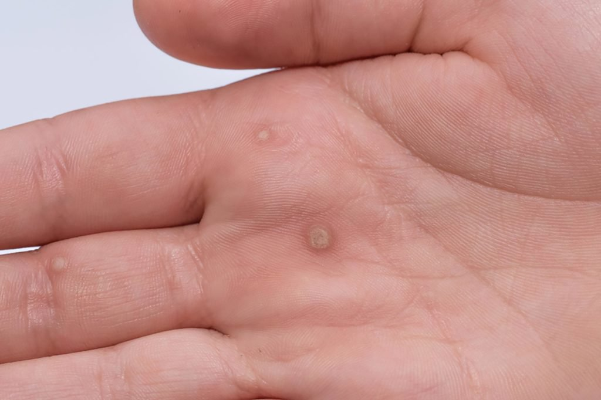

အသားမာတက္ျခင္း-Hard Skin

အသားမာတက္ျခင္းဆိုတာဘာလဲ။
အသားမာတက္တယ္ဆိုတာ လူတိုင္းနီးပါး ျဖစ္ဖူးတဲ့အရာတစ္ခုပါ။ အမ်ားအားျဖင့္ ေျခဖဝါး အေရွ႕ပိုင္းနဲ႔ ဖေနာင့္တစ္ဝိုက္မွာ ျဖစ္ေလ့ရွိပါတယ္။ လက္နဲ႔ စမ္းၾကည့္ရင္ တစ္ေနရာတည္း ကြက္ၿပီး ထူထူၾကမ္းၾကမ္း ေလးျဖစ္ေနတဲ့ အေပၚယံလႊာ အေရျပားေလးပါ။ အသားမာက မနာက်င္တတ္ပါဘူး။
ခုဒီစာဖတ္ေနခ်ိန္ သင့္ေျခဖဝါးမွာ အသားမာေတြ႕၊ မေတြ႕ျပန္ၾကည့္ေနမိၿပီလား?။ ေတြ႕ခဲ့ရင္လည္း ဒါဟာ ပံုမွန္ပါပဲေနာ္။
ဘာေၾကာင့္ ဒီလို အသားမာတက္ရတာလဲ
အမွန္ေတာ့ အသားမာဆိုတာ ကိုယ္ခႏၶာက ႏူးညံ့တဲ့အေရျပားကို ကာကြယ္သင့္တယ္လို႔ ယူဆၿပီး ျဖစ္ေပၚေစလိုက္တဲ့ အလႊာတစ္ခုပဲ ျဖစ္ပါတယ္။
တစ္ခုခုနဲ႔ ပြတ္တိုက္တာ မ်ားတဲ့ေနရာ ဒါမွမဟုတ္ တစ္ခုခုေၾကာင့္ ဖိအားမ်ားတဲ့ေနရာမွာ ျဖစ္ေလ့ ရိွပါတယ္။ အဲ့ေနရာေတြမွာ အေရျပားဆဲလ္ေလးေတြ ေသသြားလို႔ ျဖစ္လာတာပါ။
အဓိကျဖစ္ေစတဲ့အေၾကာင္းအရင္းေတြကေတာ့
ေျခေထာက္မွာဆိုရင္
- ေျခေထာက္နဲ႔ အံဝင္ခြင္က် မျဖစ္တဲ့ ဖိနပ္ေတြစီးမိရင္
- အရမ္းၾကပ္တာ ဒါမွမဟုတ္ ေခ်ာင္တဲ့ဖိနပ္ေတြ၊ ေျခထိပ္ပိတ္ ေဒါက္ျမင့္ေတြစီးတာ
- ရႉးဖိနပ္ကို ေျခအိတ္ မပါဘ ဲဝတ္တာမ်ားရင္
-
- လမ္းေလ်ာက္တာ ပံုစံမမွန္တာ
- ေမြးရာပါခ်ဳိ႕ယြင္းမႈ တစ္ခုခုေၾကာင့္ ျဖစ္ျဖစ္၊ အမူအက်င့္ စဲြမႈေၾကာင့္ျဖစ္ျဖစ္ ျဖစ္တတ္ပါတယ္။
_____________________ x _____________________
လက္မွာဆိုရင္
- တူရိယာေတြ ပံုမွန္တီးေခတ္ေလ့ရိွသူေတြရဲ႕လက္ေခ်ာင္းထိပ္ေတြ
- အလုပ္ၾကမ္း လုပ္သူေတြ၊ အေလးအပင္ မရေလ့ရိွသူေတြ
- လက္အိတ္မဝတ္ဘဲ အေလးခ်ိန္မ်ားတဲ့ ပစၥည္းေတြ မတာမ်ားရင္ ဒါေတြေၾကာင့္ျဖစ္ေလ့ရိွပါတယ္။
_____________________ x _____________________
မျဖစ္ေအာင္ ဘယ္လိုကာကြယ္မလဲ
- ေျခဖဝါးအရြယ္အစားနဲ႔တကယ္ကိုက္ညီတဲ့ဖိနပ္ကိုပဲေသခ်ာေရြးဝယ္စီးရပါမယ္။ အေရးႀကီးတာက ကိုယ္နဲ႔ ကြက္တိျဖစ္ၿပီး သက္ေတာင့္သက္သာ ရိွတဲ့ဖိနပ္ ျဖစ္ဖို႔ပါ။ ေျခေထာက္ကို နာက်င္ေစတဲ့ ေလဒီရႉး လွလွေတြကို ေမ့ပစ္လိုက္ပါေလ။ (လွတာမက္ရင္ ညစာခက္တာမဟုတ္ဘဲ လွတာမက္ရင္ အသားမာတက္မယ္လို႔မွတ္ေပါ့ေနာ္)။
_____________________ x _____________________
မွန္ကန္တဲ့ဖိနပ္ေရြးခ်ယ္နည္းကေတာ့ အရွည္ဆံုး ေျခေခ်ာင္းနဲ႔ဖိနပ္ရဲ႕ ထိပ္ဖ်ားၾကားမွာ လက္မဝက္ေလာက္ လြတ္ေနရပါမယ္တဲ့။
- ရႉးဖိနပ္ေတြမွာေတာ့ ဝတ္ၾကည့္ၿပီးရင္ ေျခေခ်ာင္းေလးေတ ြလႈပ္ၾကည့္ပါတဲ့ လြတ္လြတ္လပ္လပ္ လႈပ္လို႔မရဘူးဆို မယူသင့္ပါဘူးေနာ္။
- ဖိနပ္ဝယ္မယ္ဆိုရင္လည္း ညေနပိုင္းေတြမွာ ဝယ္တာပိုသင့္ေတာ္ပါမယ္တဲ့။ တစ္ေနကုန္ မတ္တပ္ရပ္ရ သြားလာရတာေတြေၾကာင့္ ေျခေထာက္ေလးေတြ ေဖာင္းၿပီးေညာင္းညာေနခ်ိန္မွာ စမ္းစီးၾကည့္လို႔ သက္ေတာင့္သက္သာ ျဖစ္တယ္ဆိုေတာ့ ဝယ္လိုက္သင့္ပါၿပီ။
- ရႉးဖိနပ္ေတြကို ေျခအိတ္နဲ႔ အၿမဲတဲြဝတ္ပါ။
- သင့္ေတာ္တဲ့ ဖိနပ္ရိွၿပီးရင္ေတာ့ လမ္းေလၽွာက္တဲ့ပံုကလည္း မွန္ကန္ရပါမယ္။ ေျခေထာက္တစ္ဖက္ကို အားျပဳၿပီး ေလၽွာက္တာ မတ္တပ္ရပ္တာေတြက အသားမာတက္တာကို အားေပးပါတယ္။ ဥပမာ ညာသန္သူ အမ်ားစုက ညာဘက္ေျခေထာက္ကို အားျပဳၿပီး မတ္တပ္ရပ္ေလ့ရိွတာမ်ဳိးကို အခ်ိန္အၾကာႀကီး မလုပ္ဘဲ ဘယ္၊ ညာ မၾကာခဏ ေျပာင္းေပးတာမ်ဳိး လုပ္ပါ။
- တကယ္လို႔ ေမြးရာပါ ဒါမွမဟုတ္ ထိခိုက္မႈတစ္ခုခုေၾကာင့္ ေျခေထာက္ပံုစံက ပံုမွန္မဟုတ္တာမ်ိဳး ဆိုရင္ေတာ့ ေျခေထာက္ပံုနဲ႔ အဆင္ေျပမယ့္ ဖိနပ္မ်ိဳးကို ပံုစံအပ္ခ်ဳပ္ဝတ္တာမ်ိဳး လုပ္သင့္ပါတယ္။
- လက္ဖဝါး လက္ေခ်ာင္းေတြမွာ အသားမာမျဖစ္ေစဖို႔အတြက္ အေလးေတြမတာ အလုပ္ၾကမ္း လုပ္ရတာမ်ိဳးဆို လက္အိတ္ဝတ္တာမ်ဳိး လုပ္သင့္ပါတယ္။
- အသားမာတက္တာဟာ စိုးရိမ္စရာမရိွသလို နာၾကင္မႈလည္း မရိွတတ္လို႔ အေတာ္မ်ားမ်ားက ဆရာဝန္နဲ႔ျပၿပီး ကုသမႈယူတဲ့အဆင့္ မေရာက္ၾကပါဘူး။
ဒါေပမယ့္
- ကိုယ့္ဘာသာကိုယ္ဖယ္ရွားဖို႔ႀကိဳးစားရင္းေသြးထြက္တာ၊
- အသားမာကေန ျပည္ ဒါမွမဟုတ္ အရည္တစ္ခုခု ထြက္လာတာ
- ဆီးခ်ိဳေရာဂါ အခံရိွတဲ့သူေတြမွာဆို အနာျဖစ္ရင္က်က္ဖို႔ ခက္ၿပီး ပိုးဝင္ဖို႔လြယ္တာေတြေၾကာင့္ ဆရာဝန္နဲ႔ တိုင္ပင္သင့္ျပသသင့္ပါတယ္။
_____________________ x _____________________
အသားမာတက္ျခင္းအတြက္ ဘယ္လ ိုကုသမႈမ်ိဳးေတြရိွလဲ
- အရြယ္အစားလည္း အရမ္းမႀကီးဘူး။ အနာျဖစ္တာ ျပည္တည္တာမ်ိဳးေတြလည္း မရိွဘူးဆိုရင္ေတာ့ ေျခေထာက္ လက္ေတြကို ပံုမွန္အလွဆီကရင္မ္ေတြ လိမ္းေပးၿပီး ႏူးညံ့ေအာင္ထားတာမ်ဳိး လုပ္ေပးပါ။
- ေရခ်ဳိးခ်ိန္မွာ ေခ်းတြန္းေက်ာက္ေလးနဲ႔ ခပ္ဖြဖြတြန္းေပးတာေတြကလည္း အသားမာကို ေပ်ာက္ကင္းေစႏိုင္ပါတယ္။
- အနာျဖစ္ၿပီး ျပည္တည္ေနတဲ့ အသားမာေတြအတြက္ကေတာ့ ဆရာဝန္က ပိုးသတ္ေဆးညႊန္ၾကားတာ အသားမာရဲ႕ ထုထည္ေလ်ာ့ေအာင္ ခဲြစိတ္တာ လိမ္းေဆးေပးတာမ်ိဳးေတြ လုပ္ေပးႏိုင္ပါတယ္။
- အသားမာတက္ရတာတဲ့ အဓိကအေၾကာင္းအရင္းကေတာ့ ပြတ္တိုက္မႈမ်ားတာ၊ ဖိအားခံစားရတာေတြျဖစ္လို႔ ကုသၿပီးေပ်ာက္ကင္းသြားရင္ေတာင္ ျပန္ျဖစ္ႏိုင္ပါေသးတယ္။
ဒါေၾကာင့္ အေပၚမွာရွင္းျပခဲ့တဲ့ ျဖစ္ေစတဲ့ေျခအေနေတြကို ေရွာင္တာကေတာ့ အထိေရာက္ဆံုးပါပဲ။
* အသားမာကင္းစင္ ၿပံဳးေပ်ာ္ရႊင္ႏိုင္ၾကပါေစေနာ္။ *